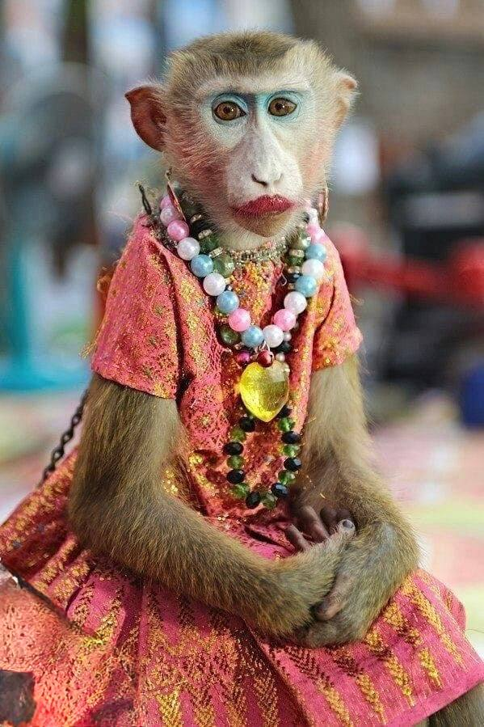
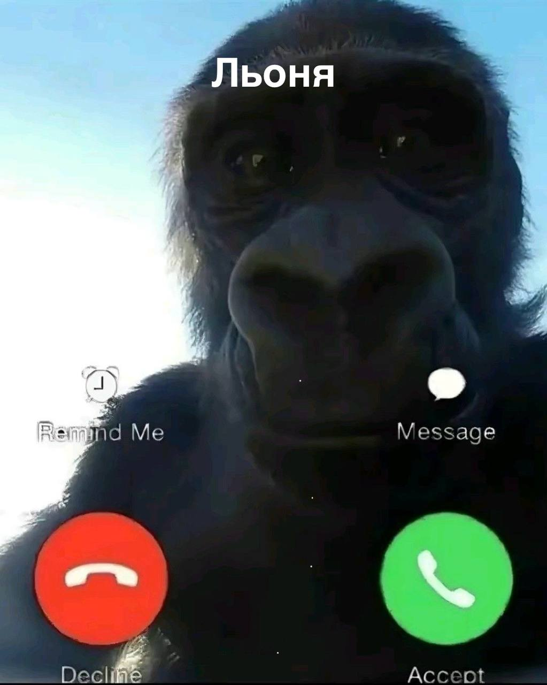

По образованію учителька, але ніколи не хотіла працювати по професії. Не її.
Хотіла буть актрісою. Але незаурядна яскрава зовнішність відлякувала продюсерів…
І вона рішила піти в развєдчікі.
А шо ? По-перше, це інтєрєсно. По-друге, абізяна - развєдчік - це шось унікальне ! А вона завжди любила виділятись.
Взяли канєшно її не з первого разу за службу. Але все ж вдалось.
І от, на одному сєкрєтному заданіі случайна встрєча ізмінила жизнь Алєговни:
серед натовпу вона побачила горіллу - красавчіка. Його не можна було не побачити, бо він був великий і кричав щось типу «уууу уууу ууу». Такій собі настоящій мужчіна.
Як мудра жінка, Жанна Алєговна не подала виду, а як развєдчік - на другий день пробила по всіх соцсєтях всю інфу про Льоню (так звали того горіллу).
Виявилось, що Льоня бізнесмен з квартірой на Пєчєрских Липках. Так шо Алєговні він понравився ще більше…